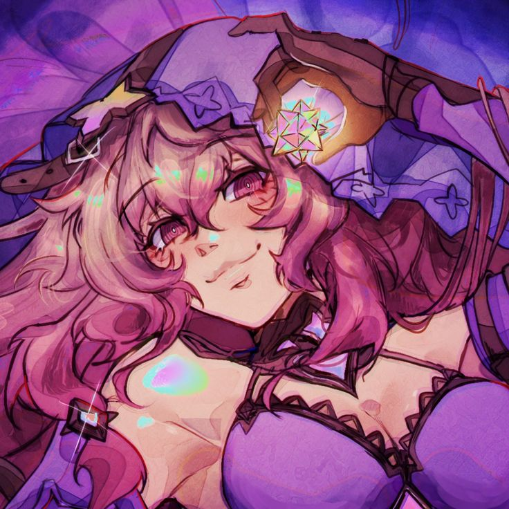

𝄖 ｡ #BLUE LOCK PROJECT
ᯓ⚽︎ STATS
⟢ Nombre: Alexandra Ness
⟢ Edad: 19 Años
128
Pase
13
Tiro
68
Físico
98
Regate
83
Defensa
73
Velocidad
Reo Mikage U20
EDICIÓN DE BLUE LOCK ELEVEN VS SUB 20 DE JAPÓN Estilo y Adaptación del Camaleón de Reo Mikage Legendario (Pasiva de Estilo – Pase) Eres un jugador nacido para adaptarse al entorno que te rodea. Tu talento radica en la versatilidad absoluta, capaz de ocupar cualquier zona del campo con total soltura, analizando cada jugada con tu conciencia espacial y traduciéndose en decisiones efectivas que elevan la fluidez del equipo. No importa si es defensa, centrocampista o delantero, todo se te da bien. Gracias a tu visión de campo avanzada y lectura del juego, tus estadísticas base se ven potenciadas por una conciencia espacial otorgando un aumento pasivo de +5 puntos en todas tus estadísticas. Tu control del juego te permite distribuir y desequilibrar con precisión quirúrgica, por lo que Pase y Regate se ven aumentados en +11 puntos inicialmente. Tiro, Defensa, Físico y Velocidad se ven aumentados en +8 puntos. Como efecto acumulable, cada vez que venzas en un duelo (con o sin ruleta), Pase y Regate aumentan en +6 puntos hasta 3 veces. Además, reduces -13 puntos en defensa enemiga en encuentros de Pase vs Defensa y Regate vs Defensa una vez ganes la acumulable máximo. Tus pases pueden tomar curvatura libre sin alterar su precisión, y al ejecutar pases a larga distancia, solo sufres un 35% de reducción por distancia, a diferencia del 50% convencional. Pero lo que te vuelve verdaderamente letal es tu capacidad de replicar jugadas ajenas: Tienes la habilidad de copiar cualquier jugada de otro jugador dentro del campo (ya sea una jugada de Genio, de alto rendimiento o estilo único) y reproducirla perfectamente, ganando +5 puntos en la estadística central que la jugada representa (ya sea Pase, Tiro, Defensa, Regate, Físico o Velocidad). Este aumento permanece indefinidamente, pero no puedes volver a replicar una jugada para seguir acumulando la misma estadística. Sin embargo, puedes repetir el proceso en otra categoría distinta (por ejemplo, primero en Tiro, luego en Defensa). Aunque tu capacidad de réplica tiene sus límites: no puedes copiar pasivas ni jugadas exclusivas de jugadores del New Gen Eleven, si copias una de Velocidad o Físico arriesgas lesión con una ruleta. Sin embargo, tienes la capacidad para adaptarte al estilo salvaje y explosivo del demonio Ryusei Shidou, la técnica precisa, control absoluto de Seishiro Nagi o tiros con efecto de Kenyu Yukimiya, así como las capacidades defensivas de un jugador de categoría primera división como Oliver Aiku. Camaleón Una habilidad que representa tu naturaleza adaptable, capaz de cambiar de rol en cualquier momento del partido. Con esta habilidad puedes copiar y utilizar una pasiva activa dentro del campo (ya sea de un aliado o enemigo), manteniéndola sólo durante la jugada (un post). Puedes copiar todo tipo de pasivas, sin importar si son de tipo ofensivo, defensivo o mixtas, Como ventaja única por tu acondicionamiento físico superior, si una pasiva contiene características de Físico o Velocidad a ruletas de riesgo (como probabilidad de lesión), esa ruleta se ajusta automáticamente a 40% de no lesión y 60% de lesión. Ejecución: Para activar esta habilidad, debes redactar claramente qué pasiva copias (con nombre y fuente), usarla de forma contextual dentro de tu jugada, y hacer referencia explícita al uso de la habilidad como Camaleón. Tras la ejecución, no tiene cooldown, solo las habilidades de las pasivas que copias respetando su tiempo de enfriamiento de las habilidades usadas. Gyro Shot – Estilo del Camaleón Un disparo con efecto que cambia de trayectoria y se caracteriza por su precisión, a pesar de ser un tiro curvo no tan violento comparado a otros con estas características. La elevación que toma aparenta desviarse de la portería aparentando que se va fuera sin embargo desciende repentinamente entrando en la red reduciendo un -8 en la estadística del portero. Si un rival interviene en la trayectoria del tiro es forzado a Tiro vs Defensa con reducción de -20% en la estadística de tu oponente. Ejecución: Debes redactar como ejecutas el tiro con efecto que desciende en curva hacía la portería pareciendo que se va fuera, tienes que hacer mención de Gyro Shot – Estilo del Camaleón esperando 7 turnos globales de Cooldown una vez lo uses. Control Absorbente x Despeje Giratorio – Estilo del Camaleón Una técnica que redefine lo imposible: convertir un rechazo, un mal pase, o incluso una posición incómoda en una oportunidad brillante. El dominio del cuerpo y la técnica se fusionan para realizar un giro perfecto en el aire o el suelo, conectando con el balón en un disparo/pase giratorio que transforma en control absorbente. Has copiado con maestría el talento inhumano del control perfecto y la improvisación total, mediante esta habilidad anulas el enfrentamiento en un balón suelto, rechace o pase. Mediante un giro técnico y estético, golpeas el balón sin importar el momento logrando mantener la fluidez y precisión de la jugada. Ya sea para asistir o despejar con elegancia, esta técnica convierte el terreno en una plataforma para la creatividad pura. Tu aumenta en +6 puntos en Pase al momento de usar esta habilidad hasta 2 veces como efecto acumulable. La dirección del pase puede adquirir efecto curvado o flotante a los 15m de distancia. Si tu equipo recupera el balón tras tu acción, ganan un bono temporal de +5 en Tiro, Pase y Regate durante esa misma jugada. La defensa que busque interceptar se ven forzados a -20% con duelo Defensa vs Pase. Ejecución: Para utilizar Control Absorbente x Despeje Giratorio – Estilo del Camaleón, debes narrar una jugada donde el balón te llegue en un ángulo o situación incómoda y tú, con elegancia y dominio técnico, conectes con él mediante un giro parcial o completo para transformar la situación. La acción puede ser usada como pase o tiro (dependiendo del contexto), y se debe hacer mención directa al uso de la habilidad. Una vez usada, la habilidad entra en su cooldown de 7 turnos globales. Defensa Asfixiante – Estilo Camaleón Has absorbido el instinto de un defensor que no da respiro. Esta técnica representa el dominio total de la presión corporal y el cierre de espacios al punto de eliminar por completo las rutas del rival. Tu cuerpo se convierte en una serpiente asfixiando su presa como una sombra que persigue y encierra a su presa, obligando a Regate vs Defensa, Tiro Vs Defensa o Defensa vs Pase, depende lo que se requiera el post. No se trata de quitar el balón directamente, sino de sofocar la libertad del atacante: niegas el pase, el giro y el espacio, ejecutando un marcaje tan ajustado que corta el oxígeno de la jugada sin hacer contacto. Tienes +12 puntos en Defensa y +10 en Físico mientras mantengas una marca asfixiante durante el enfrentamiento. Durante este enfrentamiento, si el rival no logra desmarcarse o ejecutar su acción con claridad, se le aplica una reducción de -20 puntos en la estadística que utilice (Regate, Pase o Tiro), siempre que tu narración muestra cómo reducir su margen de ejecución. Si el rival pierde la ruleta forzada de Regate vs Defensa o Pase vs Defensa o Tiro vs Defensa, obtienes un aumento temporal de +6 puntos en Pase o Regate (a elección) para la siguiente jugada ofensiva que realices. Ejecución: Para activar Defensa Asfixiante – Estilo Camaleón, tu narración debe reflejar un marcaje pegajoso, constante, sin dejar espacio para respirar. No buscas robar el balón en un solo movimiento, sino presionar con el cuerpo, cerrar líneas, negar la recepción y limitar el accionar del rival. Debe mencionarse el uso de la habilidad y detallar cómo ejecutas la presión. Tras su uso la habilidad entra en cooldown de 7 turnos globales. Movimiento de flujo Dragon Drive Shot – Estilo del Camaleón Este disparo no sigue patrones ni estructura, no es elegante, es salvaje, brutal y completamente egoísta. Una técnica creada por el deseo de romper la red sin importar el método. Mediante tu estilo adaptable, réplicas a la perfección el instinto animal contenido en un disparo inhumano: una patada desmedida donde la violencia y la precisión se combinan en una sola ejecución. Tu cuerpo toma la postura de una bestia, forzando el disparo como si tu pierna fuera una lanza viva. Tus músculos se tensan, tu visión se estrecha, y en ese instante, todo lo que no sea portería deja de existir. Has copiado el estilo ofensivo de una criatura salvaje que no piensa en fallar. Tu Tiro aumenta en +10 puntos al activar esta habilidad. La reducción de la Defensa del rival se reduce en -25% puntos durante el enfrentamiento y es forzado a Tiro vs Defensa. Ejecución: Debes hacer mención del uso de la habilidad en un balón que este rechazado o en pleno aire para hacer referencia a Tiro Dragón – Estilo del Camaleón rematando con un disparo feroz. Esta habilidad tiene 8 turnos globales de Cooldown.
Hiori Yo
EDICIÓN PARTIDO SUB-20 Calma y ritmo gélido de Hiori Yo LEGENDARIA (Pase — Regate) Calma, precisión y una frialdad tan pura que parece detener el tiempo. Mientras el campo arde en caos y los demás se consumen en sus propias prisas, tú apareces como ese soplo helado que ordena, armoniza y rompe lo que el rival creía seguro. Tu presencia es un bálsamo para tus aliados y un golpe de realidad para quienes se atreven a desafiarte. Tus pases, tan fríos como decisivos, llevan impreso tu sello: una entrega exacta de tu ser en cada jugada, sumando +17 puntos a esta estadística. Se curvan, esquivan obstáculos y encuentran a su receptor como si el balón reconociera el camino por sí mismo. Tu pierna zurda sostiene un rango perfecto de 37 metros, y más allá de eso, incluso cuando la distancia exige más, solo sufre una reducción del 15% (ejemplo: 50 m = -50% = -35%). Cada pase concreto que conectas agrega +3 puntos, hasta 5 veces por partido; una vez alcanzado ese límite, tus pases comienzan a devorar la confianza rival, restando -10 puntos en los duelos de pase vs velocidad y pase vs defensa. Un castigo silencioso pero devastador. Tu juego de pies, guiado por una mente fría y calculadora, te convierte en un maestro del uno contra uno. Lees, esperas, induces y golpeas: eso te da +12 puntos de regate, y cada rival vencido te eleva aún más, sumando +3 puntos hasta 3 veces durante el partido. Tus estadísticas de velocidad y defensa aportan +10 puntos cada una. Hiori Yo no juega: fluye, controla y redefine el ritmo del partido con una serenidad que desconcierta y maravilla por igual. Metavision incompleta × Vision serena Durante un instante, tu mente se aclara con la calma gélida que define tu juego. Es un escaneo incompleto pero certero que te permite leer lo inmediato con precisión. Las trayectorias de pase, los ángulos de tiro y las rutas de avance se ordenan frente a ti. Mientras dura el destello, tus decisiones se afilan y tu ejecución se vuelve más limpia, otorgándote +6 puntos en todas tus estadísticas durante el post. Es la primera forma de visión: incompleta, breve pero constante. Ejecución Antes de cada acción decisiva (regate, pase, disparo o recuperación), debes narrar cómo tu mirada recorre el terreno usando visión central y periférica. Este escaneo debe describirse antes de iniciar la jugada. Al mencionarlo y usar el nombre “Metavisión incompleta × Visión serena”, activas el bonus. No tiene cooldown. Pase curvo extremo La precisión de tu pierna zurda y tu calma absoluta convergen en un pase largo que confunde la lectura rival gracias a su curva. Suma +20% a tu estadística de pase durante su ejecución. Cualquier rival que intente intervenir fuerza una ruleta de velocidad vs pase, reduciendo -17% la velocidad rival. Quienes intenten interferir en la trayectoria sufrirán una reducción de -25% en defensa. Ejecución Debes tener control total del balón. Explica cómo envías el pase y a quién, y menciona “Pase curvo extremo”. Posee un cooldown de 3 turnos propios. Regate suave × Eficiencia helada Tu forma de regatear es fría, exacta y mínima. Provocas, esperas y rompes el ritmo rival con un gesto simple. Esta habilidad fuerza un defensa vs regate y reduce -15% la defensa rival. Si ganas el duelo, puedes enviar un pase directo a un compañero, potenciando +8 puntos su tiro (si remata sin controlar). Ejecución Debes narrar la secuencia de movimientos y la acción posterior (pase o desmarque) y mencionar “Regate suave × Eficiencia helada”. Cooldown de 6 turnos globales. Uno - Dos × Salida helada Una combinación fría y precisa que rompe defensas. Dentro de un rango de 2 metros, conectas un pase, te desmarcas y lo recibes de vuelta. Durante esta ejecución, cualquier jugador sin Meta Vision verá su defensa anulada. Los que sí la tienen deberán enfrentarte en pase vs defensa. Ejecución Debes tener el balón al inicio. Redacta la combinación de entrega y devolución y menciona “Uno - Dos × Salida helada”. Cooldown de 4 turnos propios. Movimiento especial en estado de flow Cero absoluto × Creador de juego profundo El punto máximo de claridad helada donde todo el campo se ordena ante ti. Durante este estado: Cualquier pase que ejecutes fuerza una ruleta de pase vs velocidad rival (si está dentro de tu rango máximo). Aumentas tu estadística de pase +15% durante tus siguientes dos turnos. Todo compañero que reciba un pase tuyo obtiene +10 puntos en su siguiente acción. Es tu estado más peligroso y preciso. Ejecución Debes estar en estado de flow y tener el balón. Menciona “Cero absoluto × Creador de juego profundo”. Tiene cooldown permanente (solo un uso por partido).